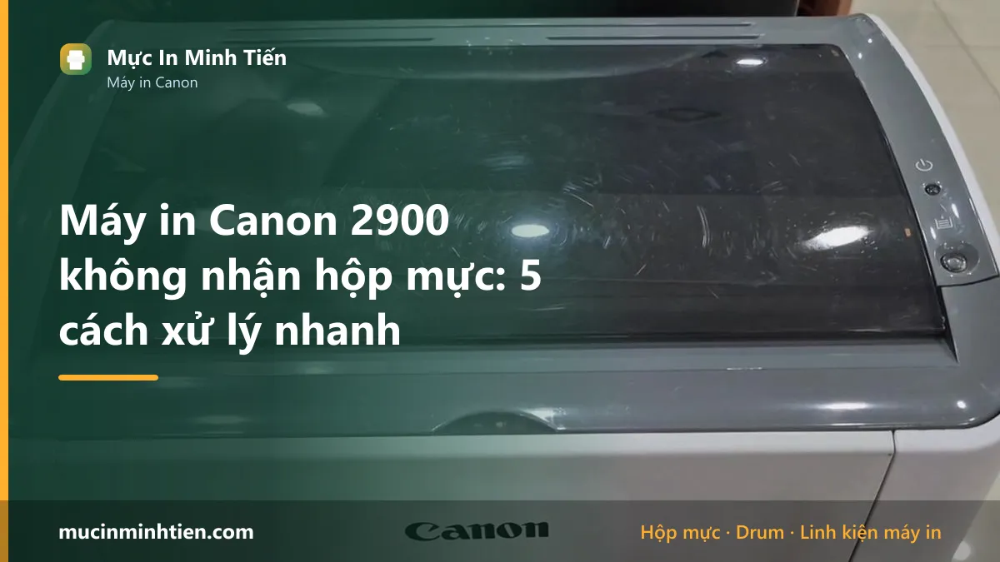
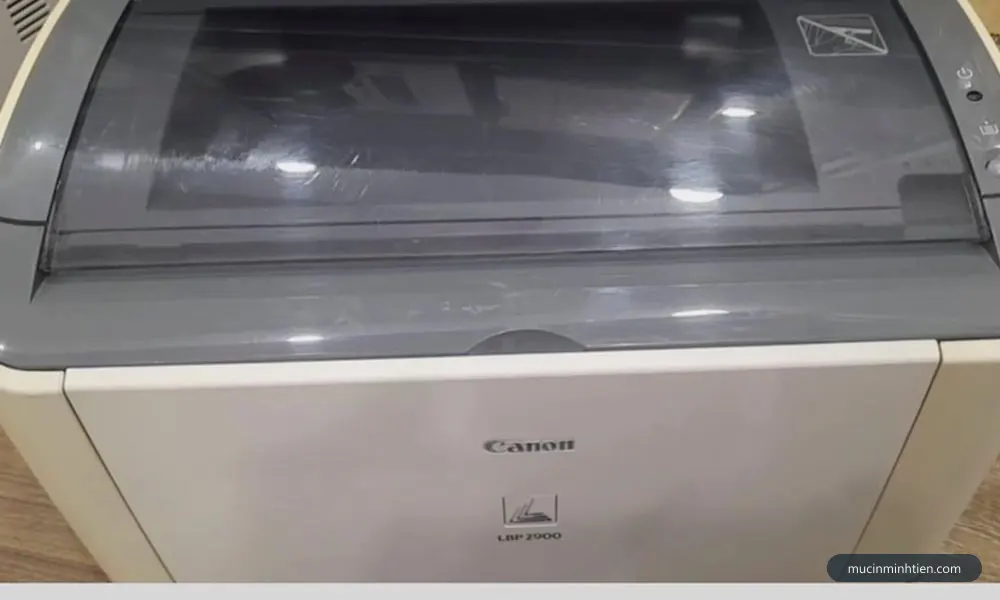
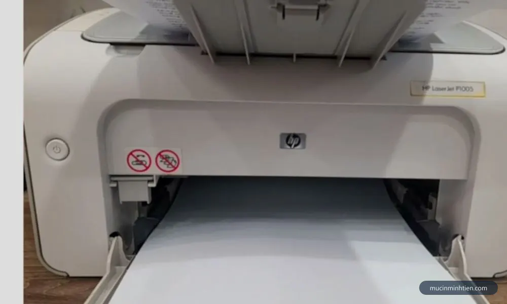
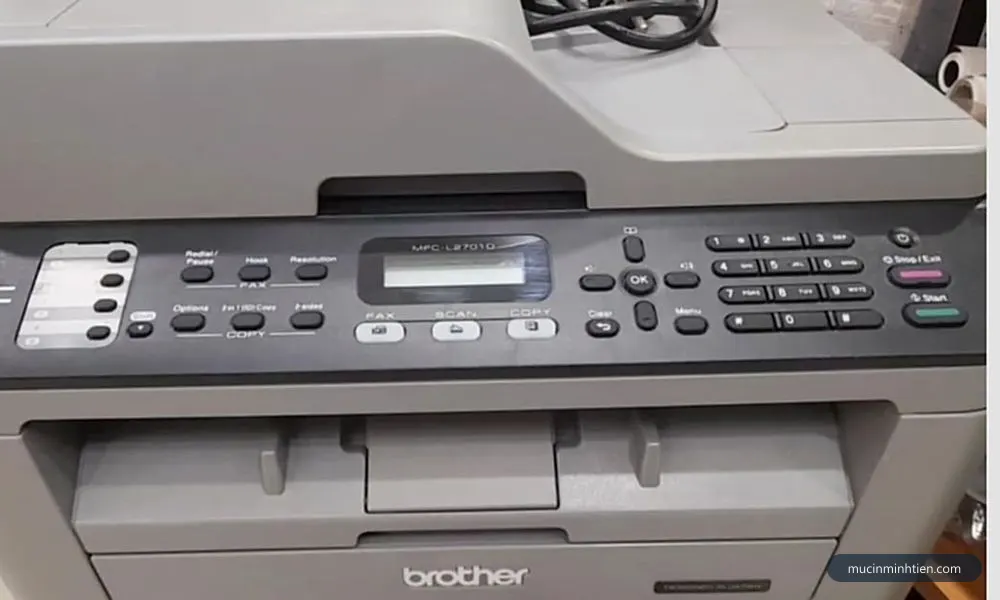
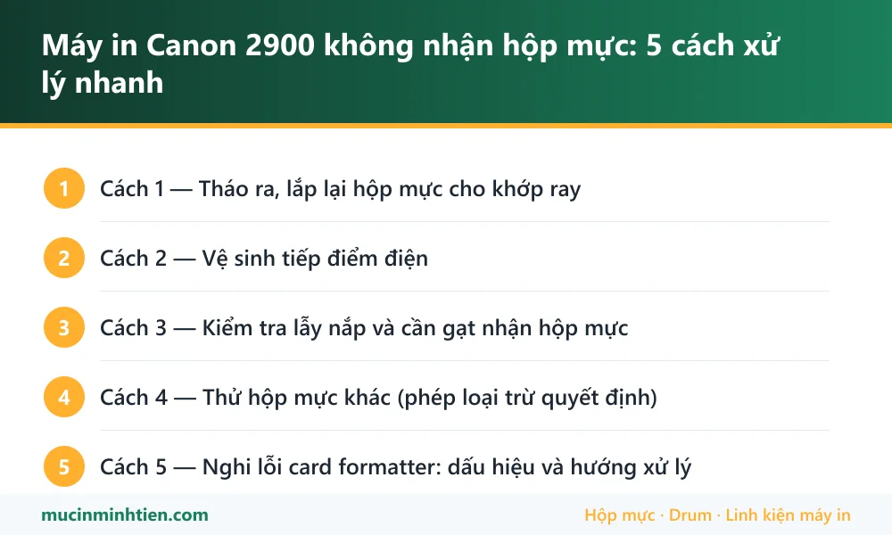

Máy in Canon 2900 không nhận hộp mực: 5 cách xử lý nhanh

Canon LBP 2900 là "máy in quốc dân" bền bỉ hàng chục năm, nhưng thỉnh thoảng dở chứng: đèn cam nháy, lệnh in không chạy, máy như không thấy hộp mực. Vì 2900 dùng hộp mực không chip, nguyên nhân gần như luôn nằm ở phần cơ và tiếp xúc — nghĩa là bạn tự xử lý được. Làm theo đúng thứ tự 5 bước dưới đây.
Cách 1 — Tháo ra, lắp lại hộp mực cho khớp ray
- Mở nắp trước, rút hộp mực ra.
- Lắc nhẹ hộp mực 5-6 cái theo chiều ngang (đều mực, tiện thể kiểm tra mực còn không).
- Đưa hộp mực vào đúng 2 ray dẫn hai bên, đẩy tới khi khựng hẳn — lắp hụt một nấc là máy không nhận.
- Đóng nắp nghe tiếng "click", chờ máy quay khởi động ~10 giây rồi in thử.

Cách 2 — Vệ sinh tiếp điểm điện
Hai bên hông hộp mực và trong khoang máy có các lá tiếp điểm kim loại. Bụi mực bám lâu ngày làm mất tín hiệu — máy tưởng không có hộp mực. Dùng khăn khô sạch (không cồn, không nước) lau các điểm kim loại trên hộp mực và các lá đồng trong khoang, thổi nhẹ bụi rồi lắp lại.

Cách 3 — Kiểm tra lẫy nắp và cần gạt nhận hộp mực
Nắp trước 2900 có lẫy nhựa ấn vào công tắc báo "nắp đã đóng". Lẫy gãy hoặc kênh (thường sau va chạm hay tháo lắp mạnh tay) khiến máy vừa báo không nhận mực vừa như "nắp chưa đóng". Quan sát lẫy ở mép nắp: đóng nắp phải thấy lẫy ấn xuống hết. Lẫy gãy có thể chế tạm nhưng nên thay — chi phí rất nhỏ.

Cách 4 — Thử hộp mực khác (phép loại trừ quyết định)
Mượn hộp mực 2900 đang chạy tốt ở máy khác lắp thử:
- Máy chạy → hộp mực cũ lỗi (trục nhông vỡ, mòn tiếp điểm) — thay hộp mực mới, xem giá hộp mực 12A/EP-303 trong bảng giá.
- Máy vẫn không nhận → lỗi nằm ở máy, sang cách 5.
Cách 5 — Nghi lỗi card formatter: dấu hiệu và hướng xử lý
Card formatter là bo mạch điều khiển của 2900. Dấu hiệu lỗi: đèn không sáng đúng trình tự khi khởi động, máy tính không nhận máy in qua USB dù đã đổi dây/cổng, máy im lặng với mọi lệnh. Card formatter sửa được (hấp chip, thay linh kiện) hoặc thay card — việc này cần đồ nghề, đừng tự tháo bo nếu chưa quen. Gọi 0915 510 203, kỹ thuật viên Mực In Minh Tiến kiểm tra tận nơi tại TP.HCM và báo giá trước khi sửa.

Cần driver hoặc tài liệu kỹ thuật cho dòng LBP, tra theo model tại trang hỗ trợ Canon Việt Nam.